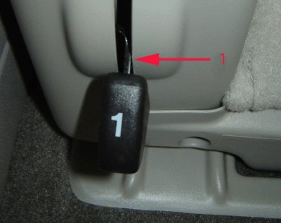

Condition/Cause/Correction # 3
Condition 3Seat back will raise but will not latch in upright position.
Cause 3
This condition may be caused by an interference condition causing the seat back release lever #1 to bind.
Correction 3
Inspect for seat back release lever to trim cover clearance:

1. Inspect the seat back release lever for freedom of movement and sufficient clearance to the seat trim. The release lever shown does not have sufficient clearance (1) to the trim.
2. Raise and hold the seat back in the upright position while carefully moving the release lever outboard slightly to free the lever.
3. If the seat back will not remain secured in the upright position, adjust the release lever just enough to provide freedom of movement from the trim.
4. Operate the seat back several times to confirm proper function.